Gráficas, mapas y escenas 3D/AR propuestas por cada equipo, con su fuente y la procedencia de sus datos. Base para la narrativa común del dashboard y de la versión impresa.
Fecha de corte: 2026-11-25
Visuales registrados: 121 de 9 equipos
Responsable del catálogo: Data Visualization Team
De 121 visuales propuestos, 19 ya tienen imagen generada, 53 son interactivos en código y 49 solo están descritos o son indicadores con datos listos. 84 usan datos de un archivo del repositorio del equipo; 10 tienen cifras escritas a mano, 14 usan datos simulados y 13 aún no tienen datos.
| # | Proyecto | Visuales | Con imagen | Interactivos | Texto o candidato | Datos del repo |
|---|---|---|---|---|---|---|
| 1 | Mérida, Ciudad Esponja Rama, Diego, José Ángel | 17 | 6 | 8 | 3 | 17 |
| 2 | Del Mundo a la Esquina: ¿Cuánto Cuesta Comer? Valeria, Isaac, Ramiro | 19 | 12 | 7 | 0 | 18 |
| 3 | El Viaje de la Resiliencia Russel, Daniel, Alejandra | 13 | 0 | 9 | 4 | 0 |
| 4 | Sentir la Calle Rivaldo, Elisabet, Christopher | 13 | 0 | 8 | 5 | 0 |
| 5 | Percepción de inseguridad en Yucatán Lorena, Iván, Karen | 6 | 0 | 0 | 6 | 3 |
| 6 | Datos viales de Mérida Bianca, Cristian, Jonathan | 6 | 1 | 0 | 5 | 5 |
| 7 | Water situation Edgardo, Gustavo | 5 | 0 | 0 | 5 | 4 |
| 8 | Del tren a la calle Damian, Raúl, Ricardo | 20 | 0 | 1 | 19 | 15 |
| 9 | Mérida for Sale Aquino, Brad, Eliana | 22 | 0 | 20 | 2 | 22 |
Barras: 32 · Línea: 18 · Mapa: 20 · Heatmap: 2 · Distribución: 7 · Radar: 2 · Red / flujo: 4 · KPI / tabla: 12 · 3D / AR: 17 · Ilustración: 6 · Juego: 1
Cada equipo tiene su sección. Arriba van hasta 6 gráficas que ya existen como imagen y usan datos reales, en el mismo espacio para todos los equipos; abajo, la tabla con el resto de sus propuestas. Todas las figuras están en la versión digital. La columna «Datos» indica de dónde salen los números:
Datos del repo lee un archivo del repositorio · Cifras fijas números escritos a mano · Simulados aleatorios o marcados como simulados · Sin datos pendiente.
¿Cómo se distribuye la lluvia en Mérida y cómo ha cambiado con el tiempo?
Rama, Diego, José Ángel · Repositorio: https://github.com/joseeangel0/merida-ciudad-esponja · Commit revisado: 7434ee2 · 2026-11-24
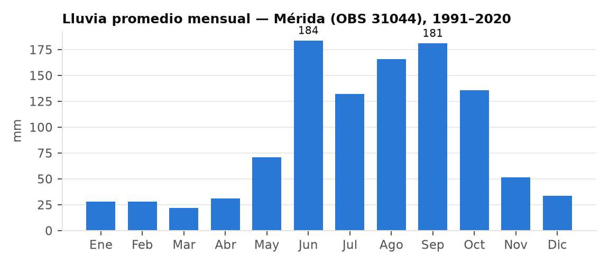
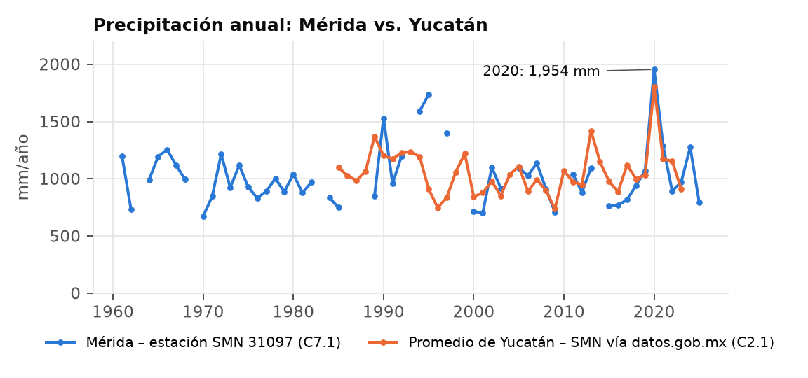
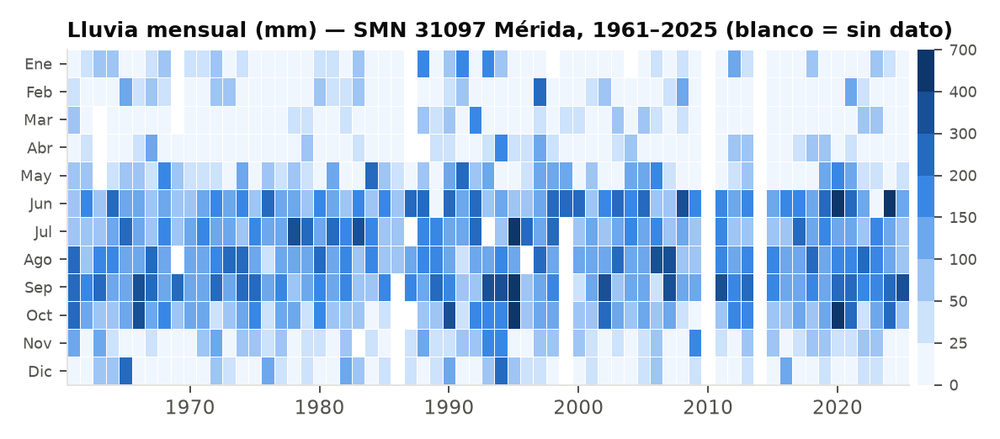
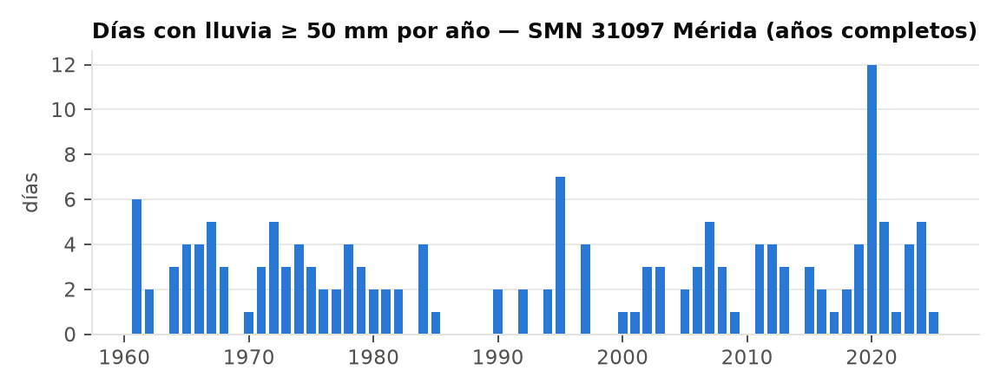
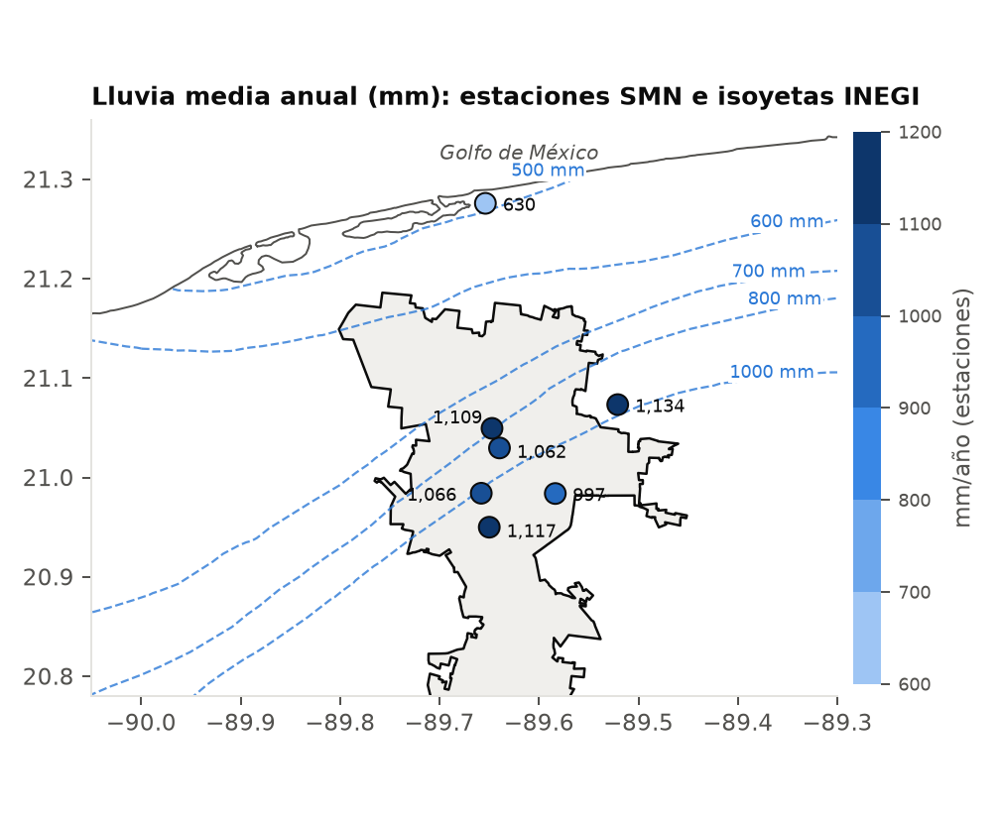
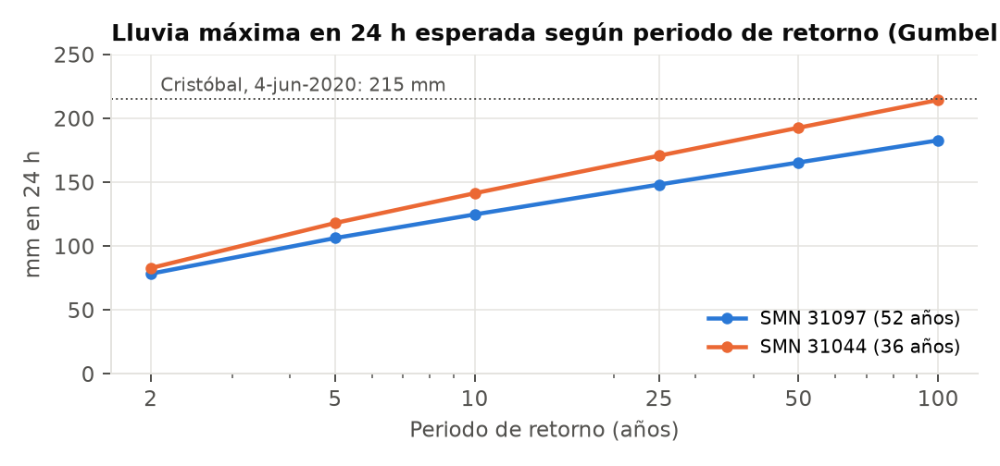
| Id | Visual propuesto | Tipo | Estado | Datos |
|---|---|---|---|---|
| D1 | Lluvia total por año (5 estaciones) Lluvia anual (mm) por estación · SMN/CONAGUA (CLICOM) | Línea | Interactiva | Datos del repo |
| D2 | ¿Cuándo llueve? Ciclo anual Promedio mensual (mm) · SMN | Línea | Interactiva | Datos del repo |
| D3 | Lluvia máxima en 24 h por año Máximo diario anual (mm) · SMN | Línea | Interactiva | Datos del repo |
| D5 | Estaciones: lluvia anual media Lluvia anual media (mm), círculos proporcionales · SMN | Mapa | Interactiva | Datos del repo |
| D6 | Lluvia y reportes de desagüe de calles inundadas Lluvia mensual (mm) y reportes mensuales de desagüe, 2018–oct 2026 · Ayuntamiento de Mérida vía PNT + SMN/CONAGUA | Línea | Interactiva | Datos del repo |
| D7 | El temporal del 30 de mayo al 1 de junio de 2026, día por día Lluvia diaria por estación (mm) y reportes de drenaje por día · SMN/CONAGUA + Ayuntamiento de Mérida vía PNT | Línea | Interactiva | Datos del repo |
| D8 | Fenómenos registrados por Protección Civil (PROCIVY) Fenómeno, efecto, afectaciones y personas afectadas (18 registros) · PROCIVY vía PNT | KPI / tabla | Interactiva | Datos del repo |
| D9 | Intensidad de la lluvia en Mérida: abril a junio de 2022 Lluvia cada 10 min (mm) y máximos en 10 min, 1 h y 24 h · CONAGUA/SMN, estación ESMA «MERIDA» (PNT) | Línea | Interactiva | Datos del repo |
| V6 | Línea de tiempo de eventos extraordinarios Eventos ≥ 100 mm en 24 h y declaratorias · SMN, CENAPRED | KPI / tabla | Solo texto | Datos del repo |
| V8 | Escena AR: lámina de agua sobre el Centro Lámina de agua sobre edificios con altura · Overture/OSM + INEGI | 3D / AR | Solo texto | Datos del repo |
| V9 | Intensidad de lluvia mm/h (histograma) · PNT (ESMA «MERIDA», abr–jun 2022) / scraping SIVEA | Distribución | Solo texto | Datos del repo |
¿Por qué comer cuesta más donde menos se gana? Salario y canasta básica en Mérida.
Valeria, Isaac, Ramiro · Repositorio: https://github.com/valnix140405/visual_modeling · Commit revisado: 291349b · 2026-11-25
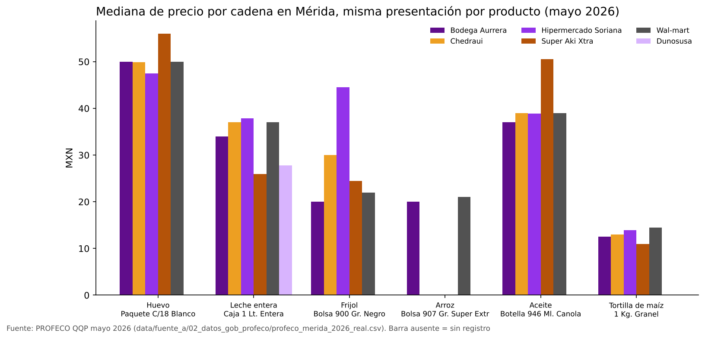
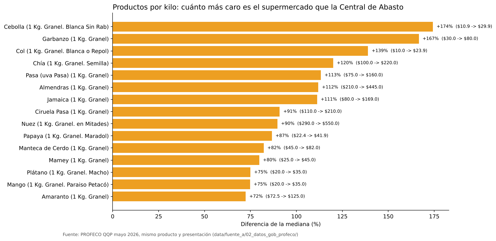
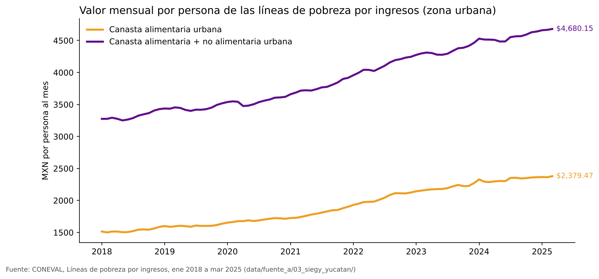
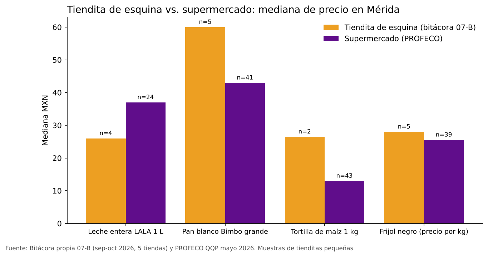
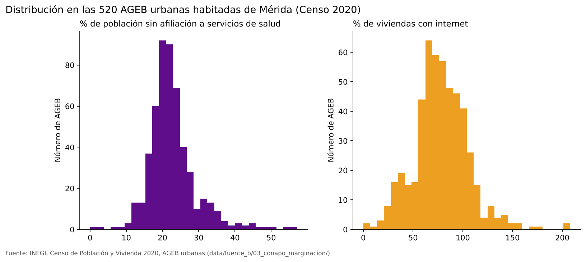
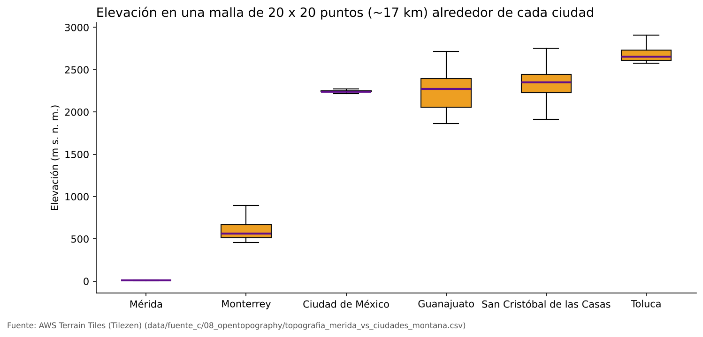
| Id | Visual propuesto | Tipo | Estado | Datos |
|---|---|---|---|---|
| W1 | La prisa no siempre es cara: conveniencia vs. súper Diferencia de precio promedio (%) · PROFECO QQP (02-A, 06-B) | Barras | Interactiva | Datos del repo |
| W2 | La red del Va y Ven en OpenStreetMap Conteo por tipo de elemento · OpenStreetMap (04-C) | Barras | Interactiva | Datos del repo |
| W3 | Visor de mercados públicos de Mérida 15 mercados (puntos) · INEGI DENUE | Mapa | Interactiva | Datos del repo |
| W4 | Relieve 3D del Centro y de Mérida Elevación (m) · AWS Terrain Tiles (no es LiDAR) | 3D / AR | Interactiva | Datos del repo |
| W5 | Prototipo de recorrido AR al mercado Ruta peatonal y tarjetas de precio · Prototipo de diseño | 3D / AR | Interactiva | Sin datos |
| N1 | Mérida es plana. Sus precios, no Desnivel de Mérida (m) vs. sobreprecio súper/Abasto (%) · AWS Terrain Tiles (08-C) + PROFECO QQP mayo 2026 | Ilustración | Imagen | Datos del repo |
| N2 | Te quedan 2 días… para todo lo demás Días de salario mínimo que cuesta la canasta de un hogar · CONEVAL, Censo 2020 INEGI, CONASAMI | Ilustración | Imagen | Datos del repo |
| N3 | Tu sueldo, en kilos de tortilla Kg de tortilla por día de salario mínimo · PROFECO QQP mayo 2026, CONASAMI | Ilustración | Imagen | Datos del repo |
| N4 | Hasta la cebolla llora Precio por kilo: Central de Abasto vs. súper (MXN) · PROFECO QQP mayo 2026 | Ilustración | Imagen | Datos del repo |
| N5 | El impuesto a la flojera Diferencia conveniencia vs. súper, 6 productos (%) · PROFECO QQP mayo 2026 | Ilustración | Imagen | Datos del repo |
| N6 | David contra Goliat en la esquina Diferencia tiendita vs. súper, 4 productos (%) · Bitácora propia (07-B) + PROFECO | Ilustración | Imagen | Datos del repo |
| W6 | Explorador de productos comparables 139 pares Abasto–súper y 93 conveniencia–súper, con filtros y búsqueda · PROFECO QQP mayo 2026 | KPI / tabla | Interactiva | Datos del repo |
| W7 | Juego: ¿Súper o Abasto? 10 rondas con pares de precios reales (diferencia ≥ 5 %) · PROFECO QQP mayo 2026 | Juego | Interactiva | Datos del repo |
Resiliencia sanitaria ante COVID-19 en Yucatán, Mérida y la UPY.
Russel, Daniel, Alejandra · Repositorio: https://github.com/RusselKu/Mexico-DataViz-by-UPY · Commit revisado: 1a546bd · 2026-10-07
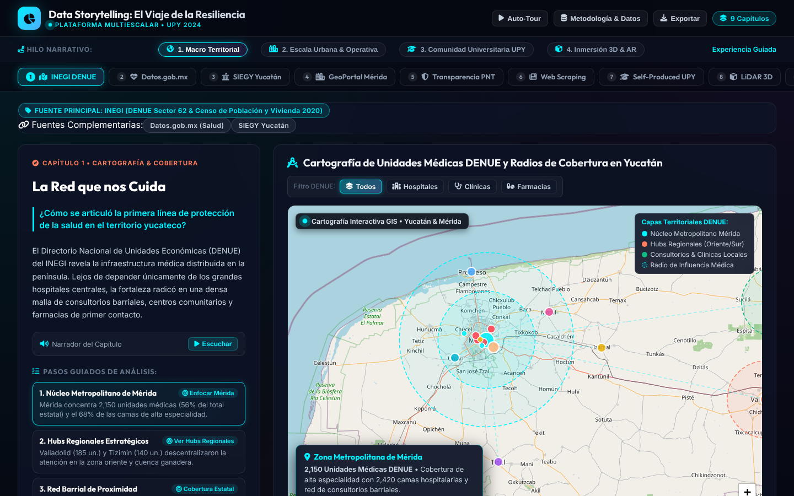
| Id | Visual propuesto | Tipo | Estado | Datos |
|---|---|---|---|---|
| 1 | Unidades médicas DENUE y radios de cobertura en Yucatán Unidades médicas y camas por municipio · INEGI DENUE + Censo 2020 | Mapa | Interactiva | Cifras fijas |
| 2 | Curvas de recuperación y cobertura de vacunas por ola % recuperación, % vacunación · datos.gob.mx (DGE) | Línea | Interactiva | Cifras fijas |
| 2b | Sankey del flujo clínico y recuperación % ambulatorio, hospital, UCI → alta · DGE Salud | Red / flujo | Solo texto | Cifras fijas |
| 3 | Radar de cohesión y capacidad en 106 municipios Puntaje 0–100, 6 ejes · SIEGY | Radar | Interactiva | Cifras fijas |
| 3b | Mapa coroplético bivariado: marginación × cobertura Índice de marginación vs. cobertura · SIEGY + DGE | Mapa | Solo texto | Sin datos |
| 4 | Accesibilidad peatonal de 15 minutos a sedes Minutos a pie, población · GeoPortal Mérida | Mapa | Interactiva | Cifras fijas |
| 5 | Abasto de insumos críticos en hospitales ancla % de abasto de EPP, 6 semanas · PNT / SSY | Línea | Interactiva | Cifras fijas |
| 5b | Raincloud y heatmap de dotación por hospital Tiempos de reabasto · PNT | Distribución | Solo texto | Sin datos |
| 6 | Red semántica de co-ocurrencia en medios Frecuencia y sentimiento de términos · Scraping de prensa local | Red / flujo | Interactiva | Cifras fijas |
| 7 | Escalas Likert de resiliencia estudiantil UPY % de acuerdo · Encuesta UPY | Barras | Interactiva | Simulados |
| 7b | Medios de transporte y movilidad estudiantil % por medio de transporte, flujos · Encuesta UPY | Heatmap | Solo texto | Sin datos |
| 8 | Maqueta altimétrica 3D de Mérida Altura (unidades arbitrarias) · INEGI CEM + LiDAR | 3D / AR | Interactiva | Simulados |
| 9 | Visor holográfico AR Sin métrica · WebXR | 3D / AR | Interactiva | Simulados |
Seguridad vial, confort térmico e infraestructura peatonal en Mérida.
Rivaldo, Elisabet, Christopher · Repositorio: https://github.com/Rivaldo2309030/Visual-Modeling-For-Information · Commit revisado: 59902e9 · 2026-10-19
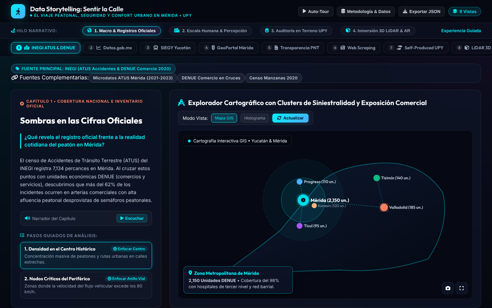
| Id | Visual propuesto | Tipo | Estado | Datos |
|---|---|---|---|---|
| 1 | Clusters de siniestralidad y exposición comercial Siniestros y comercios · INEGI ATUS + DENUE | Mapa | Interactiva | Cifras fijas |
| 2 | Curva de siniestralidad vial peatonal Índice de siniestralidad, nacional vs. Yucatán · datos.gob.mx SICT/IMT | Línea | Interactiva | Simulados |
| 2b | Sankey del flujo de movilidad Flujos peatonales vs. motorización · SICT | Red / flujo | Solo texto | Sin datos |
| 3 | Radar de servicios en corredores Va y Ven Puntaje 0–100, 5 ejes · SIEGY + ATY | Radar | Interactiva | Simulados |
| 3b | Paraderos y tiempos de espera Metros / minutos a pie · ATY | Mapa | Solo texto | Sin datos |
| 4 | 80 cruces semaforizados de Mérida Tiempo de verde (s), rampas · GeoPortal + OSM | Mapa | Solo texto | Sin datos |
| 5 | Solicitudes PNT e infraestructura C5i Peticiones por tipo · PNT / SSP / C5i | Barras | Interactiva | Cifras fijas |
| 5b | Raincloud de tiempos de atención Días de respuesta · PNT | Distribución | Solo texto | Sin datos |
| 6 | Red de co-ocurrencia de términos periodísticos Co-ocurrencia de términos · Diario de Yucatán / Por Esto! | Red / flujo | Interactiva | Simulados |
| 7 | Huella peatonal: ancho libre de banqueta vs. umbral 1.20 m Ancho libre (m) · Auditoría de campo UPY | Barras | Interactiva | Simulados |
| 7b | Medidor térmico del pavimento Temperatura (°C) · Campo UPY | KPI / tabla | Solo texto | Sin datos |
| 8 | Visor 3D de nube de puntos y ángulos ciegos Altura (unidades arbitrarias) · INEGI CEM + LiDAR de aula | 3D / AR | Interactiva | Simulados |
| 9 | Holograma 3D de rediseño urbano en AR Sin métrica · WebXR | 3D / AR | Interactiva | Simulados |
Catálogo de 28 fuentes sobre percepción de inseguridad, delito registrado y noticias.
Lorena, Iván, Karen · Repositorio: https://github.com/ldpl3012/percepcion-inseguridad-yucatan · Commit revisado: 78699f0 · 2026-11-17
El equipo todavía no tiene gráficas generadas. Abajo están las que propone y los indicadores con datos listos.
| Id | Visual propuesto | Tipo | Estado | Datos |
|---|---|---|---|---|
| E5-1 | Zonas de riesgo: ENSU, incidencia delictiva y encuesta propia Zonas de riesgo (métrica sin definir) · INEGI ENSU + SESNSP + encuesta propia | 3D / AR | Solo texto | Sin datos |
| E5-2 | Puntos de protección: Alerta Segura Ubicación de botones de alerta · Ayuntamiento de Mérida | Mapa | Solo texto | Sin datos |
| E5-3 | Entorno 3D con elevación, parques y servicios Elevación (m) · INEGI CEM 4.0 + Geoportal | 3D / AR | Solo texto | Datos del repo |
| E5-4 | Percepción de inseguridad y victimización % de población que se siente insegura · INEGI ENSU / ENVIPE | Barras | Candidato | Datos del repo |
| E5-5 | Evolución mensual del delito registrado Delitos por tipo, municipio y mes · SESNSP vía datos.gob.mx | Línea | Candidato | Datos del repo |
| E5-6 | Lugares mencionados en noticias Menciones por lugar · Diario de Yucatán, TV Azteca | Mapa | Candidato | Sin datos |
¿Dónde se nos complica el volante? Accidentes viales en el municipio de Mérida.
Bianca, Cristian, Jonathan · Repositorio: https://github.com/jonavm/merida-datos-viales · Commit revisado: 8f6cab3 · 2026-11-20
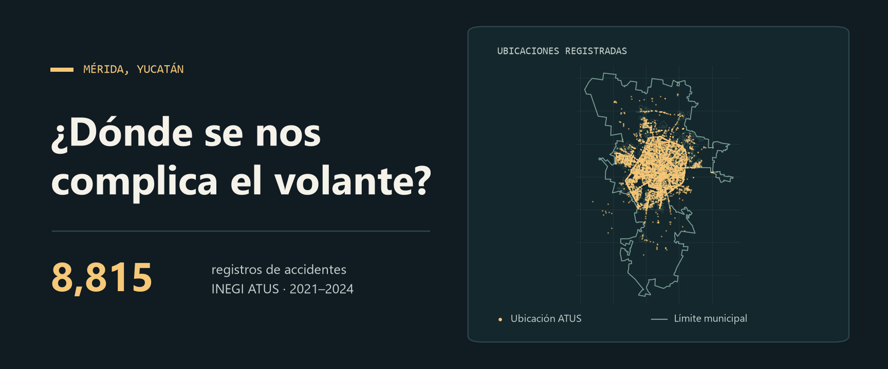
| Id | Visual propuesto | Tipo | Estado | Datos |
|---|---|---|---|---|
| E6-2 | Prototipo AR de tres zonas Accidentes por celda de 200 m; negocios a 500 m · ATUS, DENUE, SICT | 3D / AR | Solo texto | Datos del repo |
| E6-3 | Accidentes por AGEB Accidentes por zona geoestadística · ATUS + AGEB | Mapa | Candidato | Datos del repo |
| E6-4 | Indicadores de transporte sostenible 6 indicadores del boletín · Boletín SIEGY 2025-11 | KPI / tabla | Candidato | Datos del repo |
| E6-5 | Aforos vehiculares Tránsito diario promedio anual, 2013–2024 · SICT | Línea | Candidato | Datos del repo |
| E6-6 | Encuesta de lugares complicados o inseguros Calificación de señalización, iluminación, tráfico · Encuesta propia | Barras | Candidato | Sin datos |
El agua en la Península de Yucatán frente al resto de México: fuentes, drenaje, calidad y sequía.
Edgardo, Gustavo · Repositorio: https://github.com/Audileleach/Water_situation_Sources · Commit revisado: bcf3552 · 2026-10-31
El equipo todavía no tiene gráficas generadas. Abajo están las que propone y los indicadores con datos listos.
| Id | Visual propuesto | Tipo | Estado | Datos |
|---|---|---|---|---|
| E7-1 | Modelo 3D de Hells Bells, cenote El Zapote Malla 3D · Heidelberg heidICON (CC BY-SA 4.0), de terceros | 3D / AR | Solo texto | Datos del repo |
| E7-2 | Destino del drenaje de las viviendas por estado % red pública / fosa séptica / sin drenaje · Censo 2020 INEGI | Barras | Candidato | Datos del repo |
| E7-3 | Crecimiento urbano de Mérida, series I a V Superficie urbana (ha) por serie · INEGI Uso de suelo y vegetación | Mapa | Candidato | Datos del repo |
| E7-4 | Indicadores hídricos comparativos Tarifa ($/m³), presión hídrica (%), cobertura de drenaje (%) · SINA, CONAGUA, CNGMD 2025 | KPI / tabla | Candidato | Datos del repo |
| E7-5 | Encuesta de hogares y pruebas de agua TDS, dureza, nitratos (ppm) · Propia | Distribución | Candidato | Simulados |
¿Qué tan al alcance están las oportunidades alrededor del Tren Maya? Negocios 2019 vs 2025 en 34 estaciones y entorno urbano por AGEB en Mérida.
Damian, Raúl, Ricardo · Repositorio: https://github.com/ezraidenn/del-tren-a-la-calle · Commit revisado: 31e34f4 · 2026-11-25
El equipo todavía no tiene gráficas generadas. Abajo están las que propone y los indicadores con datos listos.
| Id | Visual propuesto | Tipo | Estado | Datos |
|---|---|---|---|---|
| P1-KPI | Negocios 2019, 2025 y cambio Establecimientos y cambio % · INEGI DENUE 2019 / 2025 | KPI / tabla | Solo texto | Datos del repo |
| P1-V1 | Mapa de las 34 estaciones Negocios 2025 (tamaño del punto) · DENUE + catálogo de estaciones | Mapa | Solo texto | Datos del repo |
| P2-V1 | Ranking de estaciones por cambio absoluto Cambio en número de negocios · DENUE | Barras | Solo texto | Datos del repo |
| P2-V2 | Comparación 2019 vs 2025 por estación Negocios por estación · DENUE | Barras | Solo texto | Datos del repo |
| P3-V1 | Cambio por sector económico Cambio en negocios por sector SCIAN · DENUE | Barras | Solo texto | Datos del repo |
| P4-V1 | Anillos de distancia: 0-1, 1-3 y 3-5 km Negocios 2019 vs 2025 por anillo · DENUE | Barras | Solo texto | Datos del repo |
| P4-V3 | Negocios por estrato de personal Negocios por rango de empleados · DENUE | Barras | Solo texto | Datos del repo |
| S-6 | Nube de puntos de banquetas Ancho libre (m), obstáculos, pendiente (%) · LiDAR propio | 3D / AR | Solo texto | Simulados |
| S-7 | Prueba AR de silla de ruedas en entradas Cabe / no cabe; ancho (m) · AR propio | 3D / AR | Solo texto | Simulados |
| S-7-M | Modelo virtual de silla de ruedas Volumen a escala real: 0.70 × 1.20 × 0.90 m · Modelo propio | 3D / AR | Interactiva | Cifras fijas |
| L-1 | Pasajeros transportados por mes del Tren Maya Pasajeros por mes, ene 2025–sep 2026 · Tren Maya S.A. de C.V. (datos.gob.mx) | Línea | Solo texto | Datos del repo |
| L-2 | Establecimientos por cada 1,000 habitantes por estado Establecimientos por 1,000 hab., 2025 · INEGI DENUE 2025; CONAPO | Barras | Solo texto | Datos del repo |
| L-3 | Variación de establecimientos por AGEB en Mérida Variación % de establecimientos 2019–2025 · INEGI DENUE; Censo 2020 | Mapa | Solo texto | Datos del repo |
| L-4 | Distancia de restaurantes a la parada más cercana Restaurantes por distancia a parada (m) · Sección Amarilla; GTFS Va y Ven | Distribución | Solo texto | Datos del repo |
| L-5 | Paradas de transporte por km² por AGEB Paradas por km² · GTFS Va y Ven; INEGI | Mapa | Solo texto | Datos del repo |
| L-6 | Instalaciones deportivas públicas por 10,000 habitantes por AGEB Instalaciones por 10,000 hab. · OpenStreetMap; INEGI | Mapa | Solo texto | Datos del repo |
| L-7 | Ciclovías y carriles por AGEB km de ciclovía por AGEB · OpenStreetMap; INEGI | Mapa | Solo texto | Datos del repo |
| L-8 | Monto aprobado por m² en obras de banquetas por año MXN por m², 2022–2026 (nominales) · SHCP, Transparencia Presupuestaria | Barras | Solo texto | Datos del repo |
| L-9 | Necesidades expresadas en entrevistas Respuestas por necesidad (18 entrevistas) · Levantamiento de campo | Barras | Solo texto | Simulados |
| L-10 | Ocupación de bancas por franja Personas por banca y franja horaria · Levantamiento de campo | Barras | Solo texto | Simulados |
Turistificación y gentrificación del Centro de Mérida.
Aquino, Brad, Eliana · Repositorio: https://github.com/BradRobles/M-rida-for-Sale · Commit revisado: e327292 · 2026-11-25
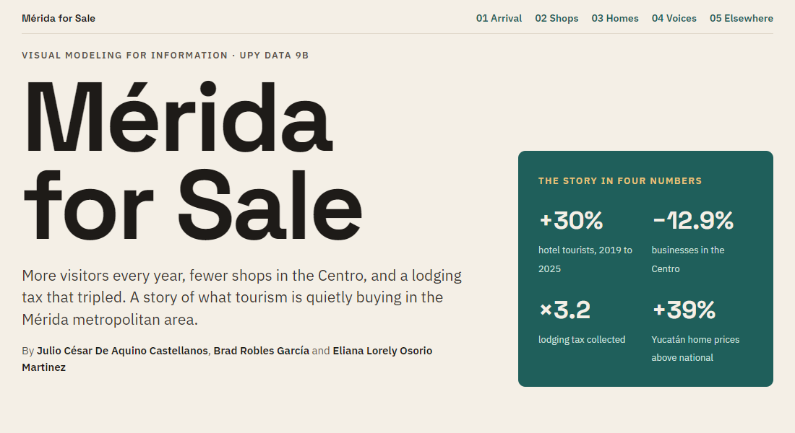
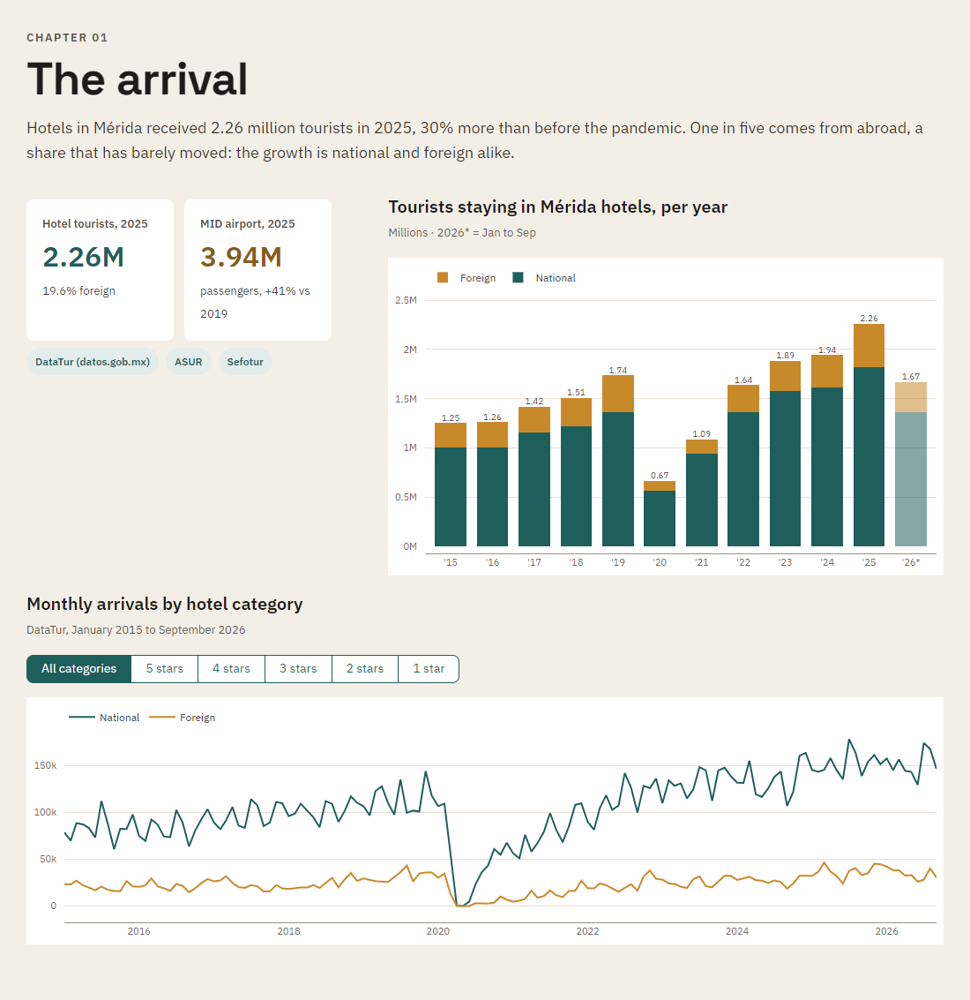
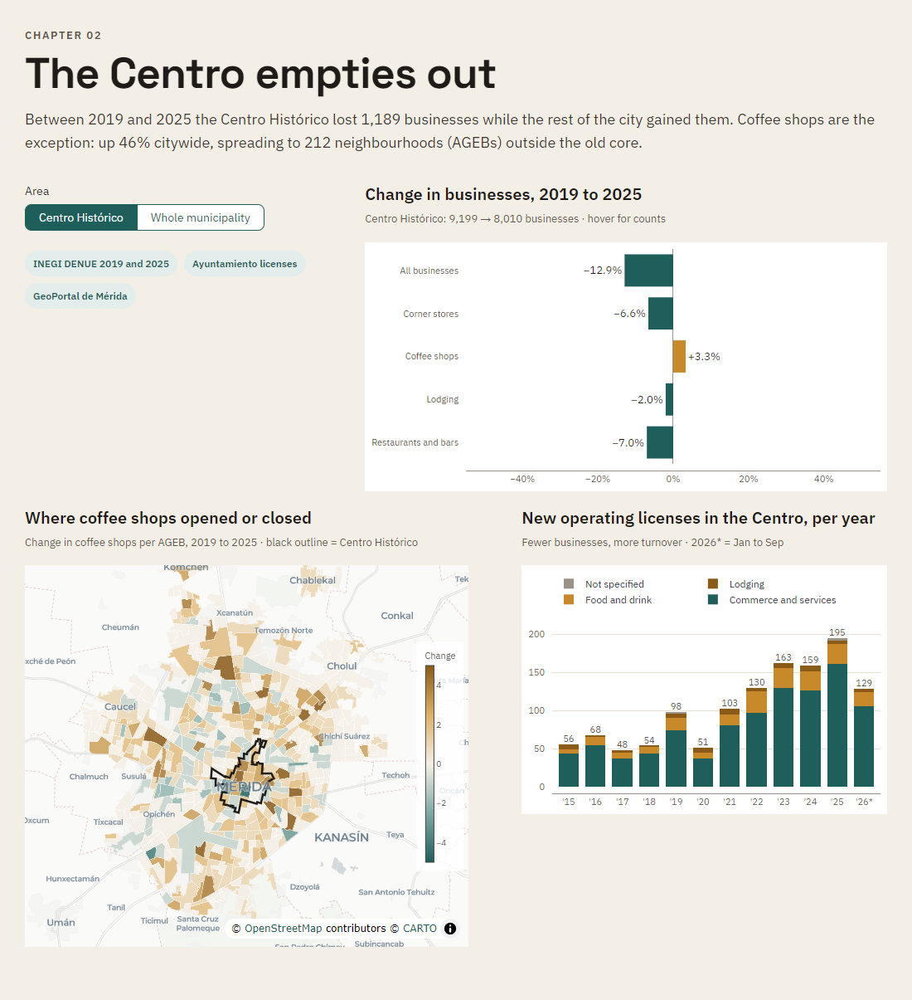
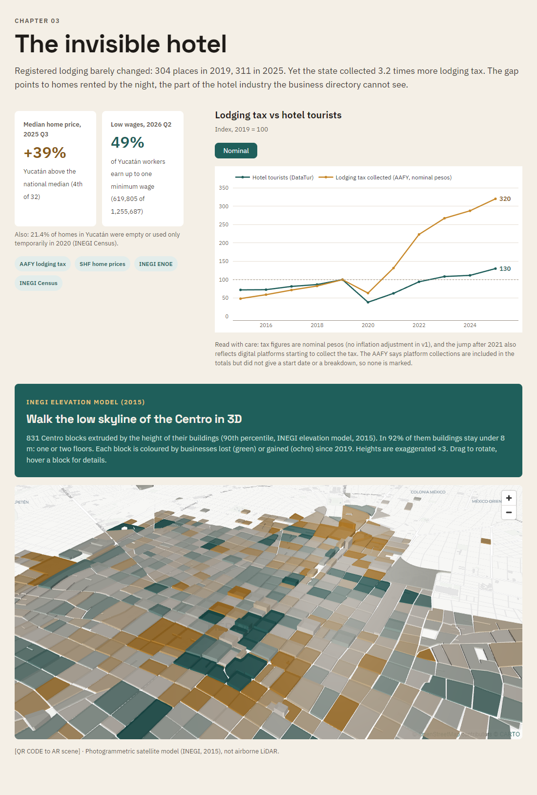
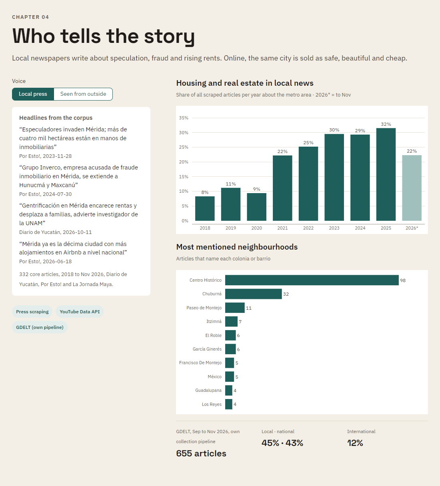
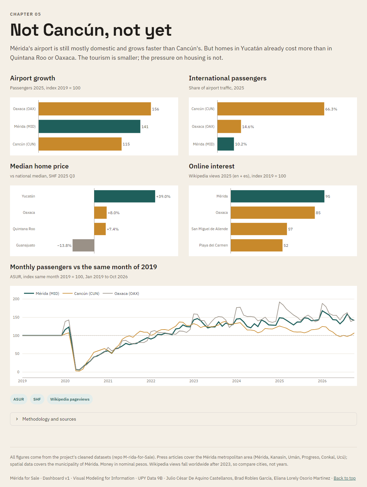
| Id | Visual propuesto | Tipo | Estado | Datos |
|---|---|---|---|---|
| C2 | Monthly arrivals by hotel category Llegadas mensuales por categoría hotelera · SECTUR DataTur | Línea | Interactiva | Datos del repo |
| C4 | Where coffee shops opened or closed Cambio en cafeterías por AGEB, 2019–2025 · INEGI DENUE, AGEB, GeoPortal Mérida | Mapa | Interactiva | Datos del repo |
| C5b | New operating licenses in the Centro, per year Licencias por año y giro, 2015–2026 · Ayuntamiento de Mérida (PNT) | Barras | Interactiva | Datos del repo |
| C3 | Median home price / Low wages Precio de vivienda vs. nacional (%), % con hasta un salario mínimo · SHF, INEGI ENOE, Censo | KPI / tabla | Interactiva | Datos del repo |
| L-1 | Walk the low skyline of the Centro in 3D Altura p90 por manzana (m) y cambio neto de negocios, 831 manzanas · INEGI MDE 2015, DENUE | 3D / AR | Interactiva | Datos del repo |
| V2 | Headlines from the corpus 4 titulares seleccionados · Scraping de prensa local | KPI / tabla | Interactiva | Datos del repo |
| V3 | Most mentioned neighbourhoods Notas por colonia (top 10) · Prensa local, GeoPortal | Barras | Interactiva | Datos del repo |
| V4 | What YouTube comments talk about Comentarios por palabra clave (6,216) · YouTube Data API | Barras | Interactiva | Datos del repo |
| V5 | Most watched videos Top 5 videos por vistas · YouTube Data API | KPI / tabla | Interactiva | Datos del repo |
| V6 | GDELT, Sep to Nov 2026 655 artículos; % voz local, nacional e internacional · GDELT DOC API | KPI / tabla | Interactiva | Datos del repo |
| E2 | International passengers % internacional, 2025 · ASUR | Barras | Interactiva | Datos del repo |
| E3 | Median home price Precio de vivienda vs. nacional (%), 4 estados · SHF | Barras | Interactiva | Datos del repo |
| E4 | Online interest Vistas de Wikipedia 2025, índice 2019 = 100 · Wikipedia pageviews | Barras | Interactiva | Datos del repo |
| E5 | Monthly passengers vs the same month of 2019 Pasajeros mensuales, índice 2019 = 100 · ASUR | Línea | Interactiva | Datos del repo |
| AR1 | Manzana del Centro con negocios 2019 vs 2025 Negocios que existían, abrieron o cerraron · INEGI DENUE | 3D / AR | Solo texto | Datos del repo |
| AR2 | Turistas nacionales vs. extranjeros Llegadas por año, % extranjeros · SECTUR DataTur | 3D / AR | Solo texto | Datos del repo |
Se clonó el repositorio de cada equipo en la fecha de corte y se registraron las gráficas, mapas y escenas 3D/AR que proponen: imágenes generadas, código de gráficas o gráficas descritas en sus README. Para cada una se revisó si los datos salen de un archivo del repositorio o si están escritos en el código, simulados o pendientes. El catálogo completo, con filtros, está en la versión digital (QR de la portada).
Supuestos de este borrador: tamaño carta vertical; el QR apunta a https://valnix140405.github.io/visual-modeling-catalogo/, que solo funciona cuando este cambio se publique en la rama main; la fecha de corte es el día en que se revisaron los repositorios, no la fecha de los datos de cada gráfica.